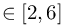

Simulate with complex geometries and complex physics
SUBSTEPS_IMPL
number of implicit substeps with constant time step size in EULERIMPL setting
SUBSTEPS_IMPL = 5.0
Default: SUBSTEPS_IMPL = 1.0
In order to save more computation time within the EULERIMPL scheme the MESHFREE time step size can be increased by a factor of SUBSTEPS_IMPL.
If the automatic time step size control method based on local errors (see TOL_T, TOL_v, TOL_keps) determines a time step size ,
then the size of the next MESHFREE time step will be
SUBSTEPS_IMPL .
In order to conserve the given error tolerance the physical entities must be computed with , so that SUBSTEPS_IMPL steps are needed
to compute one MESHFREE time step. Furthermore during one MESHFREE step a constant is used in order to reuse the same matrix, what saves
a lot of computation time.
Remark: Take care that SUBSTEPS_IMPL is not bigger than 10! Otherwise the automatic time step size control method based on local errors will reject the result
and repeat the substep with a smaller . Repetitions of substeps can be suppressed by setting
NB_OF_ACCEPTED_REPETITIONS = 0,
but then a big SUBSTEPS_IMPL will lead to very inaccurate results. Therefore we recommend SUBSTEPS_IMPL  to avoid repetitions.
| This item is referenced in: | |
|---|---|
| SUBSTEPS_EXPL | number of explicit substeps for solving TRANSPORT part in EULEREXPL setting |
| SUBSTEPS_IMPL | number of implicit substeps with constant time step size in EULERIMPL setting |
| EULERIMPL | Higher order implicit Eulerian or ALE motion (recommended among the Euler implementations) |